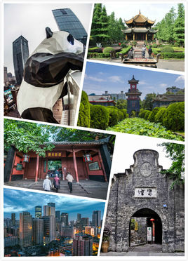

成都（Chengdu），简称蓉，四川省会，中国人民解放军七大军区之一的成都军区总部及其领导机构驻地。1993年被国务院确定为西南地区的科技、商贸、金融中心和交通、通讯枢纽，是设立外国领事馆数量最多、开通国际航线数量最多的中西部城市，也是中国铁路六大客运枢纽之一[1] 。[2]
成都位于位于四川盆地西部，成都平原腹地，成都东与德阳、资阳毗邻，西与雅安、阿坝接壤，南与眉山相连。成都市下辖锦江区等9区6县，代管4个县级市。2014年末，成都市辖区建成区面积604.1平方公里，常住人口1442.8万人[3] 。
成都是“首批国家历史文化名城”和“中国最佳旅游城市”，承载着三千余年的历史，拥有都江堰、武侯祠、杜甫草堂、金沙遗址、明蜀王陵、望江楼、青羊宫等众多名胜古迹和人文景观。
联合国世界旅游组织第22届全体大会将于2017年在成都举办。
据史书记载，大约在公元前5世纪中叶的古蜀国开明王朝九世时将都城从广都樊乡（双流）迁往成都，构筑城池；但依据现实挖掘的金沙遗址看来，成都建城史可以追溯到3200年前。关于成都一名的来历，据《太平寰宇记》记载，是借用西周建都的历史经过，取周王迁岐“一年而所居成聚，二年成邑，三年成都”而得名蜀都。蜀语“成都”二字的读音就是蜀都。“‘成’者‘毕也’‘终也’”，成都的含义“就是蜀国‘终了的都邑’，或者说‘最后的都邑’。建于公元前256年，使用至今的都江堰水利工程。
公元前316年，秦国先后吞并蜀国、巴国。秦张仪、司马错筑太城（府南城、龟城），次年，张仪在太城以西筑少城（府西城）。公元前256年，蜀郡太守李冰造石人作测量都江堰水则，是中国最早水尺。公元前141年，蜀郡太守文翁在成都建立了中国最早的地方官办学堂“文翁石室”。公元前106年。秦末、汉初成都取代中原而称“天府”。西汉元封五年（公元前106年），汉武帝分天下为十三州，置益州。王莽改益州为庸部，蜀郡为导江，治临邛。新朝地皇五年（24年），公孙述称帝，定成都为“成家”。又改益州为司隶，蜀郡为成都尹。东汉时仍为蜀郡。东汉末年，刘焉做“益州牧”，从原广汉郡雒县移治于成都，用成都作为州、郡、县治地。西汉时期，成都的织锦业已十分发达，设有“锦官”，故有“锦官城”即“锦城”之称；秦汉成都的商业发达，秦时成都即已成为全国大都市，西汉时成都人口达到7.6万户，近40万人。
汉代成都是世界漆器工艺的中心和中国茶文化的诞生地。成都在三国时期为蜀汉国都，东汉末年、天下扰乱、群雄逐鹿，汉室宗亲刘备在军阀混战中崛起。延康元年（220年），曹操之子曹丕篡汉，次年（221年），刘备以汉室宗亲的身份在蜀地蜀都称帝，延续了汉朝大统。蜀汉始于昭烈帝刘备，终于汉怀帝刘禅，历二帝，共四十三年，鼎盛时期占据荆州、益州，国力强盛，但是经过关羽失荆州、刘备败夷陵后元气大伤，后来诸葛亮治国，恢复生产，使得能与魏吴抗衡。
晋武帝改蜀郡为成都国，不久恢复称呼。公元304年，李雄在成都建国“大成”，史称“成汉”。公元347年，成汉被东晋桓温所灭，历5主，共43年。南朝宋、齐以后，益州及蜀郡的治地址都是成都，益州刺史治太城，成都内史治少城。公元348年至354年，东晋常璩编纂了中国现存最早的地方志书《华阳国志》。后周置益州总管府。隋朝开皇二年（582年），改为西南道行台。次年，复置总管府。大业初年（605年），府废，隋炀帝复改益州为蜀郡。
采用box-sizing来设置盒子的属性，并设置为float:left，可以实现盒子动态地根据父元素的大小来调整自身的宽度，而不换行。其中box-sizing这里设置的是border-box，是指设置大小时是包含边框的盒子的大小，但不包含margin。也可以设置为padding-box（包含padding，但不包含border和margin），或者content-box（正常的盒模型）。